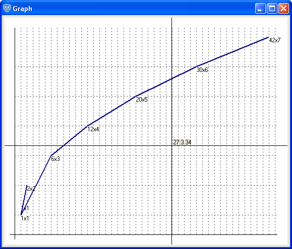

|
Для того чтобы построить график необходимо задать начальные значения точек в формате "[X]x[Y]". Значения могут быть только числовыми, целочисленными и больше нуля. Все остальные значения не принимаются программой и не добавляются в список. Так же каждое значение из списка может быть отредактировано или изменено по порядку следования или удалить, через соответствующие кнопки на главной форме.

Рис. 1. Главное окно программы.
Значения координат могут быть введены вручную либо загруженны из файла. Соответственно введенные значения можно сохранить для дальнейшего использования.
После того как все нужные значения введены можно построить график. Для этого нужно нажать клавишу "Build Graph". После этого на экране по центру главной формы появится график, построенный по введенным координатам:

Рис. 2. График.
Для оценки ввыденных значений на графике можно использовать прицел. Значения на графике под прицелом показываются слева от центра перекрестья.
|